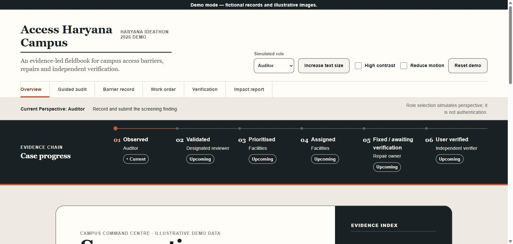
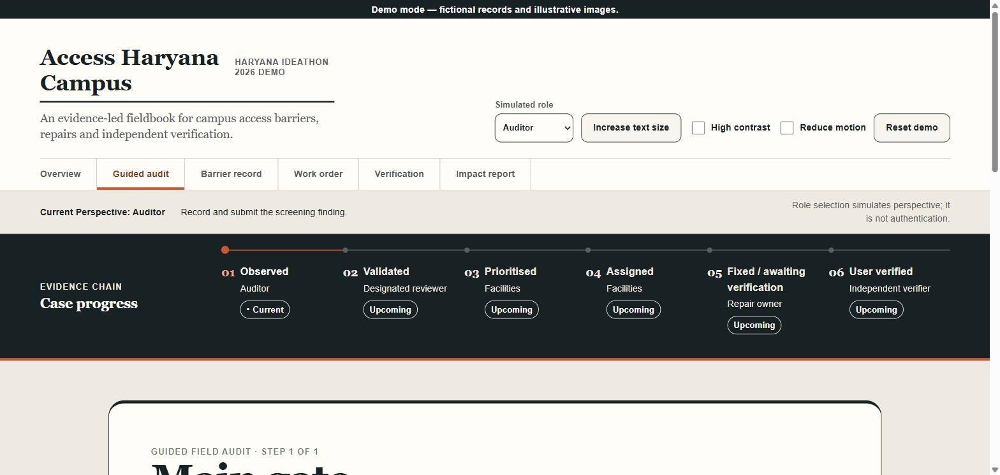
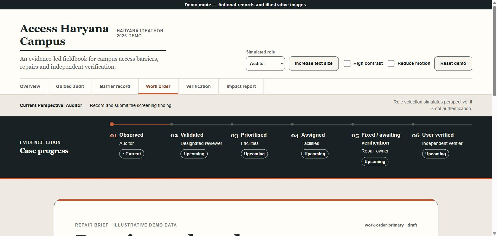
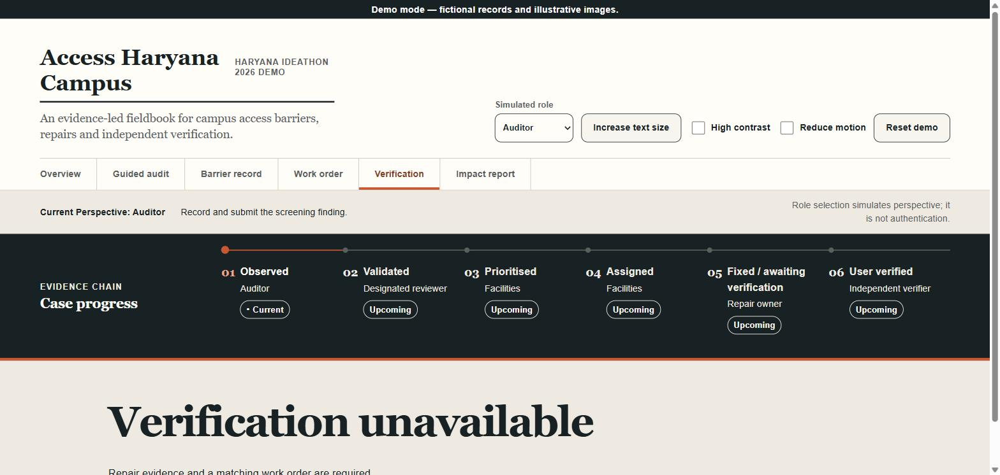

Access Haryana Campus is a responsive web application demonstrating an auditable barrier-to-fix workflow for higher-education campus accessibility. The platform enables auditors, facilities teams, and accessibility verifiers to collaborate on identifying, prioritizing, and resolving accessibility barriers through a structured, traceable process.
The application features a persistent evidence-chain workflow with six distinct stages: barrier discovery (Observed), validation, prioritization, work assignment, repair execution, and independent verification. Built with React and TypeScript, it provides a production-ready interface for managing accessibility compliance with comprehensive activity tracking, impact metrics, and role-based perspectives.
Product Overview
What It Does
Access Haryana Campus provides an end-to-end workflow for managing campus accessibility improvements:
Barrier Discovery & Audit - Guided discovery process identifying accessibility barriers on campus
Validation & Prioritization - Systematic review and priority assignment based on impact
Work Assignment - Facilities team receives and manages repair work orders
Evidence Collection - Before/after documentation with structured measurements and standards references
Independent Verification - Bounded retest by independent accessibility verifiers
Impact Reporting - Comprehensive metrics on verified repairs and success outcomes
Key Features
📱 Responsive Design
Fully responsive from mobile (320px) to desktop (1440px+)
💾 Persistent State
LocalStorage-based state management preserves progress across sessions
👥 Role-Based Views
Simulated role switching (Auditor → Facilities → Verifier)
📊 Evidence Tracking
Structured evidence with images, measurements, and standards compliance
⏱️ Activity Timeline
Complete audit trail of all actions and decisions
♿ Accessibility First
WCAG 2.1 AA compliance with text sizing, high contrast, reduced motion
Design Philosophy
The interface follows a Swiss public-service design language emphasizing clarity, operational reliability, and evidence traceability:
High contrast color palette with Haryana saffron accent (#D85A1A)
Dense operational UI focused on data and decision-making, not marketing
Evidence-chain visualization as the memorable design device
Restrained motion with 140-220ms transitions only for state changes
Accessibility compliance built-in: WCAG 2.1 AA standards, keyboard navigation, screen reader support
User Journey
1. Overview (Command Centre)
The entry point displays:
Current active journey (e.g., "Main gate → Admissions")
Next action with priority and hazard indicators
Backlog of identified barriers
Illustrative campus evidence images
Six-stage evidence lifecycle rail
Recent activity timeline
Role switcher and demo controls
2. Guided Audit Screen
Progressive discovery of accessibility barriers with structured questionnaire based on WCAG standards, evidence capture with photos and measurements, and barrier description with immediate impact assessment.
3. Barrier Record Screen
Detailed record of a single identified barrier with full description, measurement data, evidence images, standards compliance references, and priority assignment.
4. Work Order Management
Facilities team coordinates repairs with work order details, resource assignment, documentation requirements, and completion status tracking.
5. Verification Screen
Independent accessibility retest following original audit criteria with before/after evidence comparison and journey success/failure recording.
6. Impact Report
Comprehensive impact metrics including verified repair count, successful journey tests, cost analysis, and exportable one-page summary.
Technical Architecture
Stack
Frontend: React 19.2 + TypeScript 7.0
Build Tool: Vite 8.2
Testing: Vitest 4.1 + React Testing Library 16.3
State Management: React Context + Hooks + LocalStorage
Accessibility: WCAG 2.1 AA compliance
Deployment
Platform: Vercel (serverless)
Configuration: SPA routing via vercel.json
Build: npm run build → dist/ directory
URL: https://011-access-haryana-campus.vercel.app
Verification & Testing
Unit tests for calculations, validation, and storage
Integration tests for complete user journeys
End-to-end browser acceptance tests
Lighthouse performance and accessibility audits
A11y snapshot testing for keyboard navigation
Application Screenshots
Below are comprehensive screenshots showing all key screens and user interactions within the application.

Screen 1: Overview (Homepage) Landing page showing the Campus Command Centre with evidence lifecycle rail, simulated role selector, accessibility controls, and next actions.

Screen 2: Guided Audit Audit workflow showing the structured questionnaire for barrier discovery, evidence capture, and initial assessment. This is where auditors document accessibility barriers.
Screen 3: Barrier Record Detailed barrier documentation with measurements, evidence images, standards compliance references, and priority assignment for facilities team review.

Screen 4: Work Order Assignment Facilities team interface for managing repair work orders, resource allocation, timeline estimation, and completion tracking.

Screen 5: Verification Independent accessibility retest interface where verifiers confirm repairs meet original audit criteria and record journey success rates.